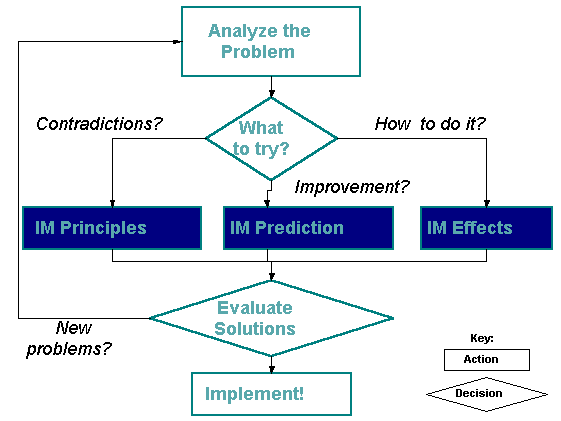
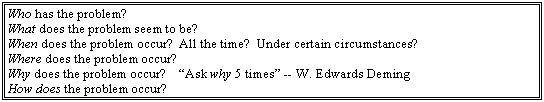

Ellen Domb, Ph.D.
The PQR Group, 190 N. Mountain Ave., Upland, CA 91786
(909)949-0857 Fax (909)949-2968 E-mail: EllenDomb@compuserve.com
This paper was first presented at the Invention Machine Users Group Conference, Feb. 3-4, 1997, in New Orleans, LA USA.
TRIZ as practiced in the late 1990's is a large, complex system consisting of a wide variety of tools and techniques. Practioners appreciate that the richness of TRIZ is the result of research that has been conducted by various organizations, and that the benefits of TRIZ-solving difficult technical problems very quickly-are best realized by those who can apply many of the TRIZ tools to the same problem, then combine the results for breakthrough problem solutions.
Beginners, however, find this richness overwhelming. Research on how to teach TRIZ to beginners, so that they can quickly learn enough to benefit from TRIZ is summarized in this paper. This research has been incorporated in the popular training program "Practical Innovation" and in the "TRIZ Learning Event" presented by the author and Karen Tate and James Kowalick.
The people who are looking for TRIZ training are our customers:
They have 3 very explicit "Customer Requirements"
There is a fourth customer requirement that has been observed frequently, but is never stated directly by the customers. This requirement is "ego protection." That is, they reject classes that embarrass them. They reject instructors who tell them how bad their work is. They are proud, professional people, and they learn best if they think that their successes are respected, and their knowledge is useful.
This attitude is contrary to some of the traditional ways of teaching TRIZ, which emphasize the differences between traditional thinking patterns and the analytic TRIZ approach, and seek to have the student acknowledge his/her own "psychological inertia" (or "paradigm paralysis") in order to appreciate the power of TRIZ to overcome inertia. These students, confronted with discussions of psychological inertia or analyses of the bad practices of other creativity methods take the attitude.
"Show me what's different, and teach me to use it. Don't preach at me that I need to change-if I didn't want to change, I wouldn't have come to the class!"
Combining the 3 explicit needs for fast success, minimum classroom time, and familiar terminology with familiar cases and examples has led to the following key features in successful classes:
Experienced TRIZ practitioners use ARIZ, the algorithm for inventive problem solving, in a rapid, intuitive way, that mystifies beginners. Beginners do better with a simplified form of ARIZ, that lets them get started, and get some of the benefits of TRIZ. This boosts their confidence, as well as their knowledge, so that they will be willing to spend the time that mastery requires. There is no argument that the complete application of ARIZ is superior to a simplified version. The goal here was to find a simplified method that is good enough to get the beginners started in successful use of TRIZ.
The roadmap for simplified TRIZ using the Invention Machine Laboratory (tm) (IM) software is shown below. Other software may use other names for the databases and search engines that assist the TRIZ practitioner in finding the appropriate principles of problem solving, paths of technical evolution, and scientific effects to solve each problem. Although advanced practitioners differ on their approaches to using, or not using, computer-based tools, the beginners we have worked with consistently prefer the software-based approach to a textbook-based approach.

The box labeled "analyze the problem" represents several steps:
To lead students to develop their own statements of the ideal final result for a system, they are first introduced to the equation that defines the evolution of systems to state that are increasingly ideal: that is, systems evolve to increase ideality.
Ideality = ( Benefits / (( Costs + ( Harm)
Systems evolve to create increasing benefits, decreasing costs, and decreasing harm, or side effects.
The Ideal Final Result describes the solution to a technical problem, independent of the mechanism or constraints of the original problem. It is the upper limit of the "ideality" equation, and can be visualized as "ideal":
The business benefits of formulating the Ideal Final Result are immediate. By removing the mental constraints of existing solutions, , it gets people to think "out of the box." One of the processes observed in class that are learning to develop the Ideal Final Result is that people begin to recognize that they had been creating their own boundaries; that is, they have been developing the "box" within which the problem is confined.
Formulating the Ideal Final Result (IFR) encourages breakthrough thinking by enabling the participants to define the roadblocks they had been facing. If the roadblocks are technical, TRIZ helps them solve the problems. If the roadblocks are administrative ("We've never done it that way" or "They'll never let us do it") the clarity of the definition of the IFR frequently leads to improved communication that makes it possible to try new methods. At the very least, it defines the boundaries of the allowable solutions clearly, so that the TRIZ students can proceed.
See the tutorial on The Ideal Final Result (../february/result.html) for examples and details on introducing beginners to this powerful concept.
Functional Analysis is the next step in problem analysis. Experienced TRIZ practioners will use S-field analysis as part of ARIZ to understand the elements of the system, their interactions, and the problems with those interactions. Functional analysis is more accessible for beginners because it draws on tools that they already know, and then uses that knowledge to advance the TRIZ process.
Engineering practitioners are usually familiar with some of the following function tree-related tools:
Have them use whichever of these tools are familiar to identify the system, subsystem and component levels of the problem, and the interactions between them. The Function and Analysis columns of the table below help organize the work:
For example, if the system being analyzed is a lawnmower, the Function Statement and Analysis columns look like this:
This leads the beginner directly to the application of system level TRIZ thinking, called "Trimming" (the term was introduced by The Invention Machine Company.) Before trying to improve a function, examine whether it is necessary. If so, can it be done by other components of the system? This will introduce the first creative ideas for system change. To follow the lawnmower example, the function "Blade cuts grass" has been found useful. Following the Trimming questions in the table, ask the following:
This leads to thinking about "smart" grass that grows to the right height and stops, getting rid of the need for the lawnmower! For the strategists in the beginner TRIZ group, this is the kind of thinking that gets them high payoff. For the technical problem solvers, the subsystem and component function analysis will have more benefit. If the problem is to improve the fuel efficiency of the mower, the function analysis should list all the functions that use power, identify useful and harmful ones, then seek to enhance the efficiency of the useful functions and remove the harmful functions. For example,
Eliminating vibration would improve fuel efficiency by reducing wasted, and would have a secondary benefit of reducing noise, too. At this stage, TRIZ beginners will prioritize their improvement opportunities using a combination of intuition and business needs analysis.
Use of advanced tools for functional analysis should be introduced after the beginners have developed their own capability. They will welcome the advanced tools when they approach complex problems, instead of resisting them as adding complication to the learning experience.
For more on Functional Analysis and Trimming, see Tutorial On Functional Analysis (../december/tutorial.html)
Finding the Zones of the Problem is a major element of ARIZ, which includes many techniques to help the TRIZ practioner localize the actual problem to be solved. For beginners, a simplified approach can be drawn from the world of journalism, and from the methods of quality improvement. Ask the following questions about the problem:
 Who has the problem? What does the problem seem to be? When does the problem occur? All the time? Under certain circumstances? Where does the problem occur? Why does the problem occur? "Ask why 5 times" -- W. Edwards Deming How does the problem occur?
This litany "who, what, when, where, why, how" is frequently called "5W's and an H" and will lead the problem solver to the identification of the zone of interaction that is the source of the problem, and has the benefit of familiarity of technique and vocabulary.
Applying the tools of TRIZ: Keep in mind the beginners needs are
Fast success
Minimum classroom time
Familiar terminology, cases, examples
and introduce the TRIZ techniques in ways that get to their own problems quickly. The "classical" teaching problems, such as the ones in "Suddenly the Inventor Appeared" are useful starting points because of their clarity in teaching individual, specific techniques, but the beginners will appreciate them only in limited doses. Moving directly to the problems that confront the class in their business will help them move the learning from the abstract, theoretical constructs to the world in which they will be applying their learning.
A successful classroom exercise has the students build their own database for the 40 Principles of problem solving for technical contradictions, and the 4 principles of separation for physical contradictions. In small groups, the participants read the principles, and find examples in their own technology of applications of each principle to the technology of their industry. The groups then share their results. This contributes to building familiar case studies, building confidence that TRIZ will help them (because it really does apply to their industry) and provides "ego protection" when they realize that they have already used TRIZ concepts, although they may have lacked the theoretical and organizational structure.
The same mechanism can also be used to introduce the TRIZ patterns of evolution of technology. Have the participants plot S-Curves for their technology, and have them find the patterns of evolution that their industry has followed. Knowing the false starts and wasted investment in bad decisions in their own industry will make them more receptive to the application of TRIZ for predicting future paths.
See the tutorial article on Technology Forecasting (../january/forecasting.html) for more detail.
For teachers of TRIZ the summary of this article is
Less time in the classroom results in more on-the-job learning. Less formality of vocabulary results in more acceptance and use outside the class. Having fewer choices (5W's and an H, filling out the functional analysis and trimming table instead of all of ARIZ) results in more desire to learn new tools later.
For TRIZ beginners the good news is that there are immediate benefits from starting to use TRIZ. They will create the time needed to learn the advanced TRIZ methods once they have experienced the benefits by improving their own products and systems.
(c) 1997. Ellen Domb, The PQR Group. All rights reserved. (909)949-0857. Permission to download and print copies is granted to readers of The TRIZ Journal.